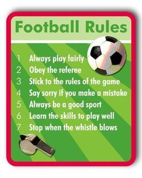

General rules
General Rules
- The objective of Football is to score by getting the ball into the
opposing team’s goal, by propelling it with feet or any other part of
body but not with the hands.
- Two teams with a maximum of 11 players each [1 goalkeeper and 10
field players] play. The minimum players required to play are 7.
- Total number of players in a team are 18 [11 playing and 7 substitutes]
- Two halves of 45 minutes each is the time duration of the match.
- Referee keeps a check on the time and may extend the period of the
game than the regulated 45 mins due to change of the players, undue delay,
etc. The referee is assisted by 2 assistant referees.

Back to Homepage